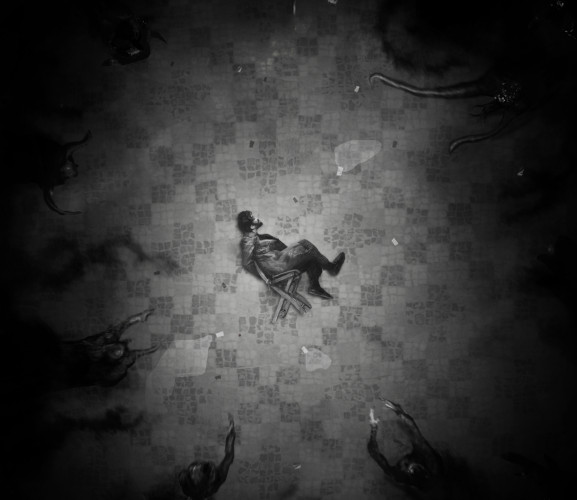

An overview of the short stories that I wrote.
I only write in French. Sorry English readers !
Most of the texts are held private, but if you're interested I can send some or an excerpt to you on demand, except the ones that have been published for obvious reasons.
Editor : Nestiveqnen Editions
This short story of over 7800 words was published in the successfully crowdfunded short story anthology "Sur les traces de Lovecraft", volume 2 (dedicated to new authors).
It follows the story of Jacob Clyne, student at the Miskatonic University of Arkham, Massachusetts, and inspector Bowen, as the latter investigates the strange disappearance of all guests at a ball room a few nights before the events.
Each short story was accompanied by an illustration made by Sebastien Ecosse.

Heart.BiTS is a short story of over 2200 words I wrote for the Prix René Barjavel of 2018, the annual writing contest of the sci-fi festival Les Intergalactiques of Lyon.
The theme of the contest was « Lettre ouverte aux vivant.e.s qui veulent le rester ».
It is about a dying man stuck in a collapsing building during the war, remembering an advertisement about transferring your mind in a virtual reality world.
It lost to « La Coupole » by Céline Maltère, but was nominated by the jury as very close to winning.
Since it was not published, I made the text freely available on my personal blog for anyone interested to read it.
Pilar Colomar is a short story of over 2800 words I wrote for the Prix René Barjavel in 2019, the annual writing contest of the sci-fi festival Les Intergalactiques of Lyon.
The theme of the contest was « La fin du monde soudainement, et puis le monde enfin eut une réaction… ».
It is about Pilar Colomar, a fictional woman who became famous for starting an international uprising in Central America.
A comedy short story of 3400 words I wrote for a call for papers of Éditions Luciférines for the anthology Démons Japonais. The text did not get selected.
It is about an Ohaguro bettari and a Tengu talking in rhymes, harassed by Hell's upper bureaucracy as they are failing to torment a amnesic soul for centuries now; their performance rating is catastrophic.
A short story of around 11,700 words that I wrote for a call for papers I don't remember. The text did not get selected.
It is about science activists working secretly towards a cure against immortality, a trait genetically engineered by global corporations on poor workers around the world, so they can be a cheap source of labor for as long as possible.
Ces yeux rubis dans les ténèbres is a short story of roughly 8000 words I wrote for a call for papers of editor Les Vagabonds du Rêve for the anthology Rouge. The text did not get selected.
It is about the investigation regarding Fumiko Mori, a cyborg yakuza killer infiltrated in Interpol, who carried out the assassination of a real estate CEO who failed to pay his debts to Japanese mafia.
Asgard Inc is a comedy short story of over 2800 words I wrote for editor Les Têtes Imaginaires, during a call for papers for Fantasy Art And Studies 6 : Pop Norse. The text did not get selected.
It is about Odin, jaded CEO of the Asgard Incorporated international company, holding an extraordinary meeting with his fellow Norse Gods coworkers, such as Thor, Loki or Völund, to try to save the company as they struggle to adapt themselves to modern corporate life.